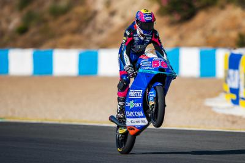
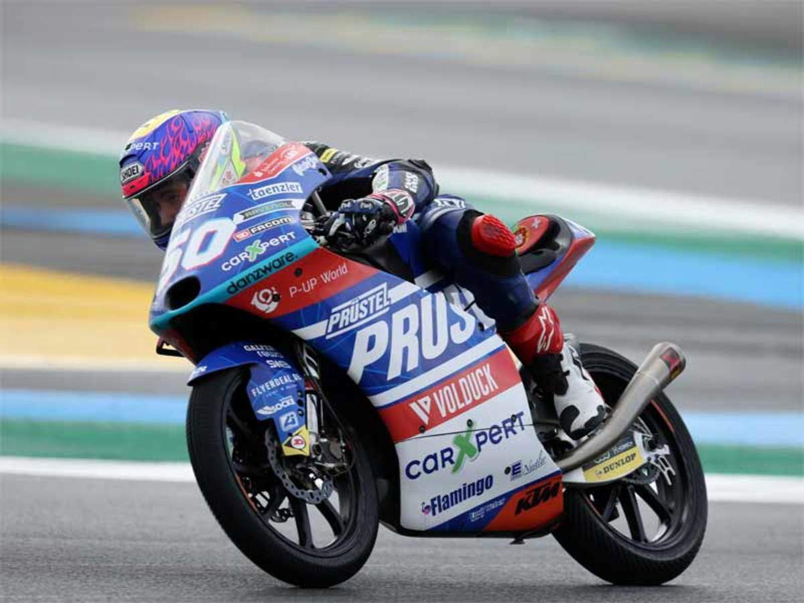

Jason Dupasquier was an up and comming star in the sport of motorcycle racing.
Dupasquier began his racing career in 2011; he won multiple SuperMoto Swiss championships and switched to circuit racing in 2016.
He was set to debut in the Red Bull Rookies Cup in 2018, but suffered a femur injury that prevented him from doing so.
Dupasquier debuted in the Red Bull Rookies Cup in 2019 and was soon awarded a two-year contract as a Moto3 rider,
making his Moto3 debut in 2020.
He was in his second season in MotoGP's lightweight class and was in the top 10 in the overall rankings going into the weekend
On 29 May 2021, Dupasquier was involved in a crash with Ayumu Sasaki and Jeremy Alcoba near the end of the day's qualifying session at the Mugello circuit of the Italian Grand Prix (Gran Premio d'Italia) in Scarperia.
Dupasquier appeared to fall between turns nine and ten and was hit by his own motorbike, and then by Sasaki's; the session was red-flagged immediately.
In a later interview, Alcoba stated that he thought he had also run over Dupasquier.
FIM (Fédération Internationale de Motocyclisme) medical intervention vehicles quickly arrived at the site and the rider was treated on the track for about 30 minutes prior to a medical helicopter arriving and airlifting him to hospital.
Dupasquier was taken to Careggi University Hospital, in Florence, Italy,where he underwent "thoracic surgery for a vascular lesion" and was also operated on for a brain injury, according to a statement from the MotoGP World Championship organization. He died from complications of his injuries on 30 May,
having been declared brain dead in the morning, and taken off life aids in the morning, surrounded by his family and close friends.
Dupasquier's team, Prüstel GP, announced it would not be taking part in the day's race.
Dupasquier's death was the first during a world championship event since Moto2 rider Luis Salom's fatal crash at Circuit de Barcelona-Catalunya during the second practice session of the 2016 Catalan motorcycle Grand Prix.
The MotoGP grid held a one-minute silence prior to Sunday's Italian Grand Prix. Fabio Quartararo, the current world championship leader, won the event and, in his victory lap, paused at Dupasquier's accident site (turn 9, Arrabbiata 2) and pointed to the sky.
He also waved the Swiss flag when he arrived at parc fermé.
Read more about Jason Dupasquier.